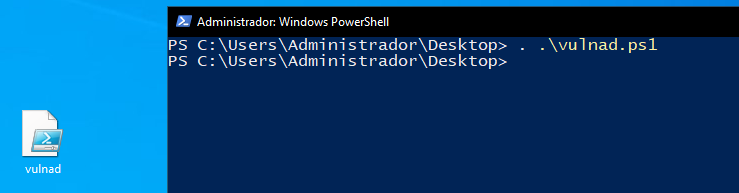
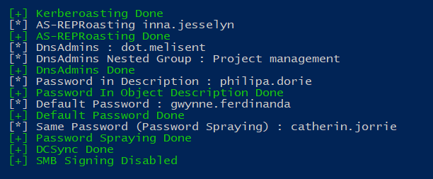

https://github.com/safebuffer/vulnerable-AD
Esto aumentará mucho los objetos del domino como usuarios, grupos, nuevas ACLs y aplicar ciertos parámetros de configuración para soportar lo ataques que indica.
Ahora simplemente lo llevamos nuestro DomainControler y lo ejecutamos:

Invoke-VulnAD -UsersLimit 100 -DomainName "corp.local"
Todo esto creará la estructura:
